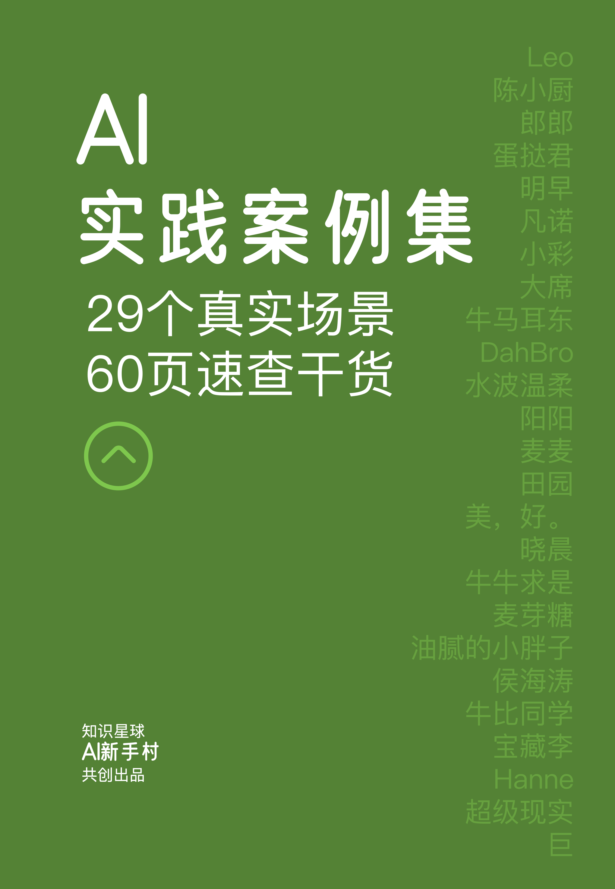
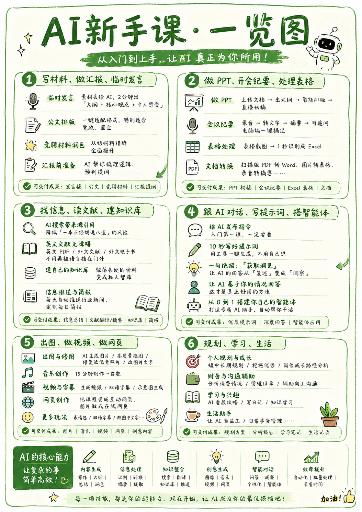
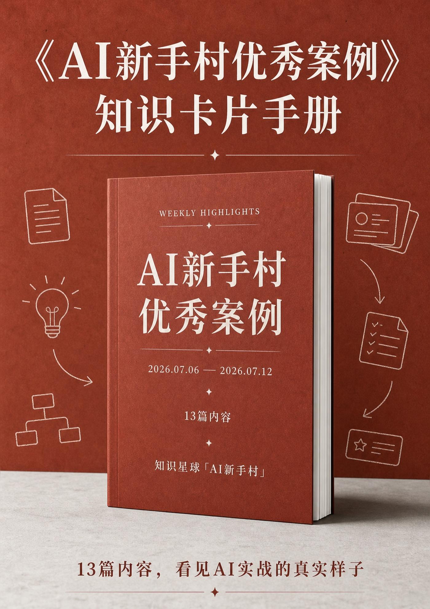
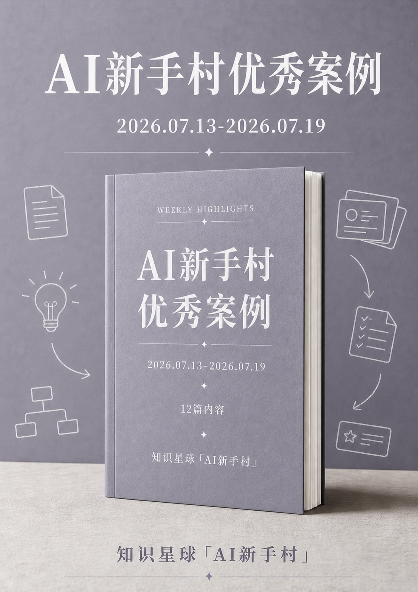
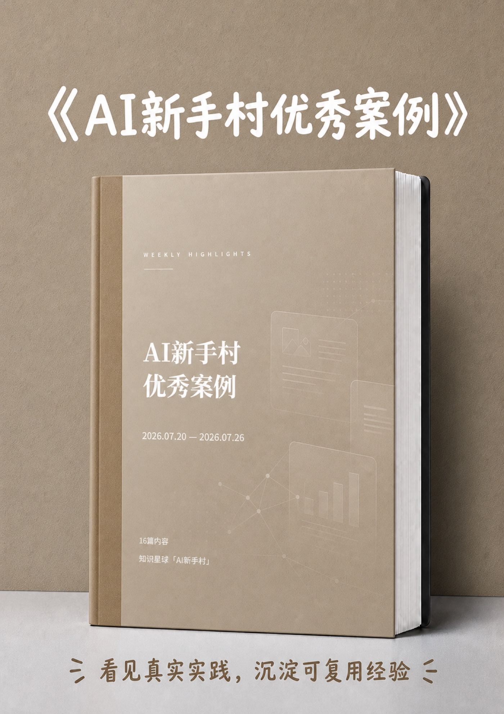
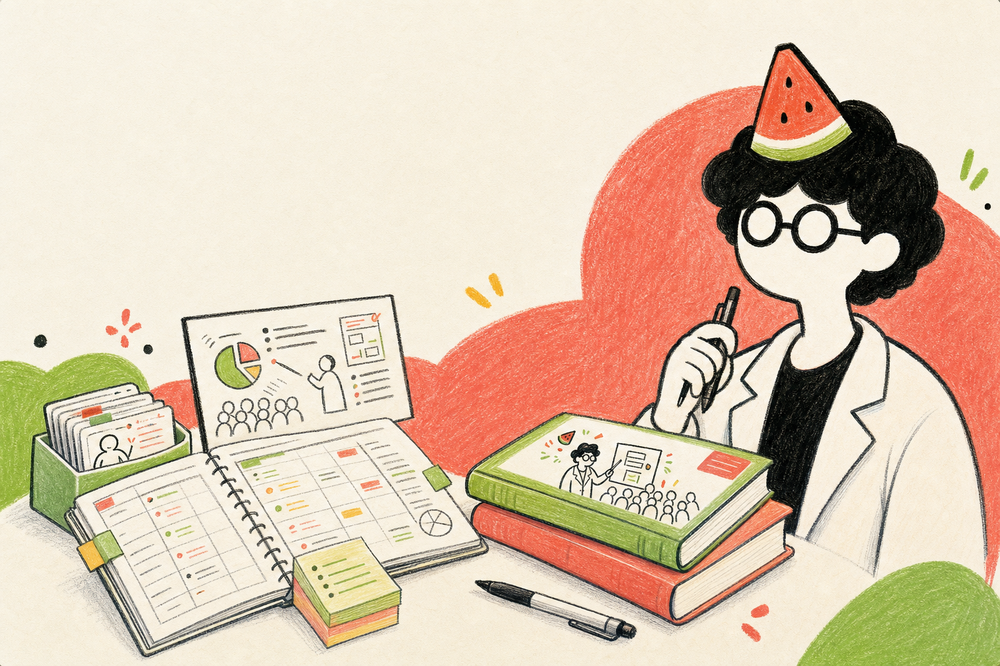
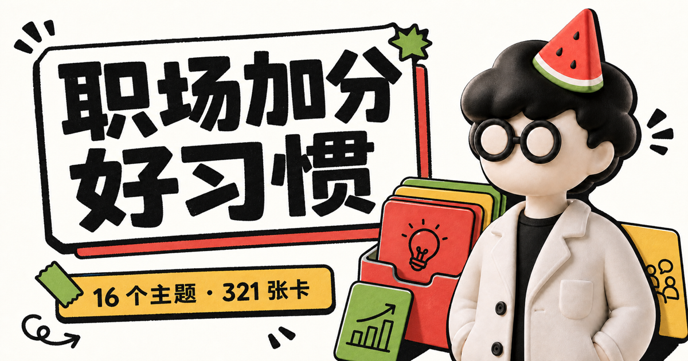
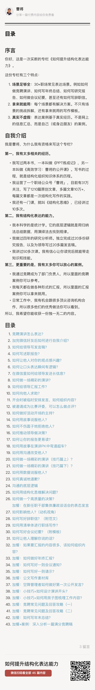

两本书
学习方法与表达呈现。
先看重点
学习方法与表达呈现。
从第一次尝试，到真正完成一件事。
公众号和小红书，都叫「曹将」。
把日子说给自己听。
我关心的事
从读一本书、做一页 PPT，到尝试一种新工具， 我更关心的不是知道了多少，而是能不能把它变成行动、作品和自己的经验。
01 / 出版作品
AI 新手村



案例与独家资料
课程之外，还可以带走专题手册、提示词库和持续更新的真实案例。



03 / 微信公众号「曹将」
微信公众号
1947篇文章
31万关注
写学习、表达、职场、工具，也写一路走来的选择与变化。长文章，是我整理经验和回答问题的主要方式。
小红书
把职场方法、知识管理、阅读与实用工具，拆成更轻巧、更直观的一页。
小红书搜索「曹将」，就能找到我。


16 个主题 · 321 张卡06 / 小报童专栏
《如何提升结构化表达能力》覆盖竞聘演讲、年终总结、研究报告、会议纪要等 30+ 个常见场景，用 40+ 篇内容拆解案例，并提供可复用的写作模板。
